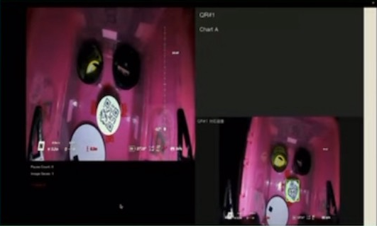

課題説明
フィールド内に設置されたQRコードを高速に読み取り、リンクやテキスト等の内容を即時に提示・参照できるようにし、現場の情報取得を効率化する課題である。
UI構成
- 左上: QRコードの取得（カメラ/画像入力）
- 左下: 認識したQR情報の保存リスト
- 右上: 左下で選択したQRの内容を表示
- 右下: 選択QRに対応する画像を表示
ギャラリー（クリックで拡大）

アルゴリズム・実装概要
OpenCV の QRCodeDetector によるマルチ検出を中核に、検出履歴・内容表示・対応画像の紐づけ・CSV保存までを一体で管理します。UI は 左右2分割（左: カメラ映像＋履歴、右: 内容プレビュー＋対応画像）で、読み取りから参照・保存の流れを止めずに操作できます。
- 検出:
detectAndDecodeMulti(frame)で複数QRを同時検出。各QR内容は重複管理し、管理番号（QR#）を付与。 - 履歴/トラッキング: 最新から
MAX_HISTORY=10件を表示。新規検出は赤、選択中はシアン、プレビュー保存済みは緑で色分け。 - 内容表示: 右上に選択QRのフルテキストを折り返し表示。URLは判定、画像URLはプレビュー対応（タイムアウト/例外処理あり）。
- 対応画像: 右下に「左動画の対応フレーム」を表示。
session_folder内の命名規則（..._M_left_video.jpgやQR{番号}を含む）や時刻照合で最適な1枚を検索し、キャッシュ活用。 - CSV保存: セッション毎に
qr_history_YYYYMMDD_HHMMSS.csvを生成。通し番号・内容・検出時刻・プレビュー保存済みを管理し、重複検出時も内容の完全一致で重複判定。 - 文字化け対策: Mac を含む環境差に対応するため、
NFC正規化・BOM/ゼロ幅除去・再エンコードを実施し、安全な文字列へ整形。 - フォント: 日本語/英語を判別して OS ごとに適切なフォントを選択。アウトライン付き描画で視認性を確保。
画面レイアウトと保存動作
- 左（上）: ライブ映像＋検出枠・短縮ラベル。自動保存は新規QR検出時に左動画のみ実施。
- 左（下）: 検出履歴（最新→古い）。項目は動的スペーシングで見切れを防止、番号付きで直接選択可能。
- 右（上）: 選択中QRの内容フル表示（vCard/JSONは改行維持・折り返し）。
- 右（下）: 選択中QRに紐づく左動画の静止画像を中央配置で表示（見つからなければメッセージ）。
- 手動保存: 右側の内容プレビューのみ保存可（CSVに保存状態を反映）。
キー操作
- 1: 履歴を順番に切り替え（最新から循環）。
- 2: 現在表示中の内容プレビューを手動保存（左動画は保存しない）。
- Enter: 表示中の内容が URL の場合にブラウザで開く。
- 3〜9: 履歴の該当番号を直接選択。
- q: 終了、CSV から重複を除いた履歴一覧を標準出力。